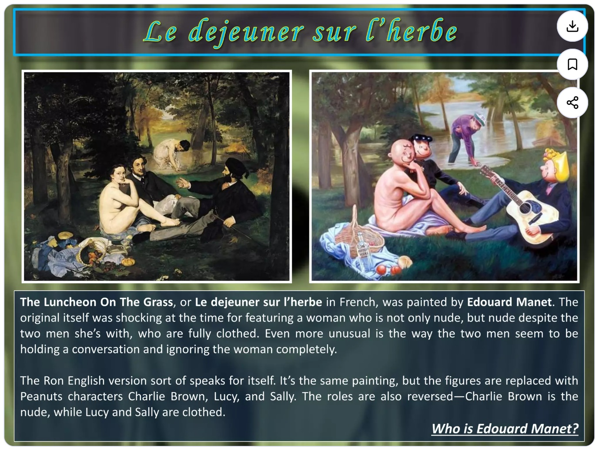

Literature
Ron English, Abject Expressionism: The Art of Ron English (San Francisco: Last Gasp, 2007), p. 72. ISBN 978-0867196894.
Ron English, Original Grin: The Art of Ron English (Paris: Cernunnos, 2019), p. 46. ISBN 978-2374950938.
Notes
This work references Charlie Brown and Lucy van Pelt from Charles M. Schulz’s Peanuts.
This work references Édouard Manet’s Le Déjeuner sur l’herbe.
This work appears in the SlideShare presentation The Popaganda of Ron English: The Godfather of Street Art.
Ancillary Documentation
The following materials document visual source material associated with the composition and image-bearing online circulation of the work.



Selected Online Circulation
Selected examples of the work’s online circulation, reproduction, or discussion. This list is not exhaustive; it is intended to document representative appearances of the image beyond formal exhibition and publication records.